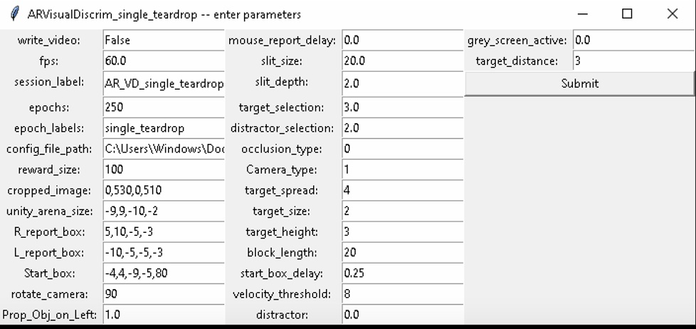
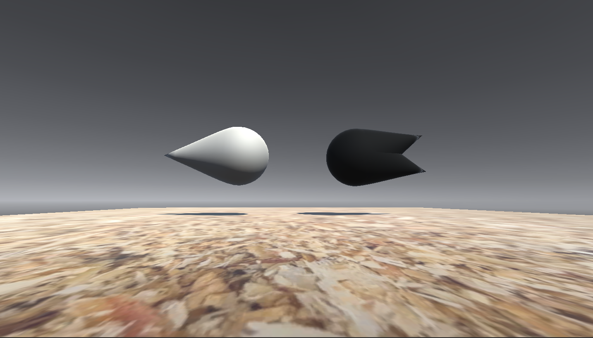

Mouse training#
General mouse training#
This documents give a protocol for training mice in the AR setup. This protocol should be followed by all labs so that we can get consistent data. This is by no means the final protocol and will need to be adjusted as we perform the experiments but we should only deviate from it after we discussed a change in the monday meetings. This protocol should then be updated to reflect that. A full description of the currently used protocol can be found in the Training tolias lab tab.
Water restriction#
For the duration of the experiment mice will be placed on water restriction so that we can give the mice water rewards as a reinforcer to learn the task. To check that the mice are healthy you will need to weigh them each day. We allow for mice to loose up to 10% of their body weight, if a mouse looses more than this we put them back on water to recover.
Each day the mice will be given 1.5ml per day in total, as a minimum. This means that it is important to know the water droplet size coming from the spouts on the rig. You should aim to keep this water droplet size at approximately 5ul. Then depending on the number of successful trials you can subtract this amount from the 1.5ul so that you know how much to give them. Water can be given to the mice after each session using a small tub (or lens cap) where the measured amount of water can be placed. Typically the mice will drink this very quickly.
Mouse handling#
With behavioral training it is very important that stress on the mouse is kept to a minimum. Therefore mice should never be picked up by the tail. This has been shown to reduce the behavioral performance of mice and increase anxiety associated behaviors. Instead, pick up the mice using a plastic tube and if possible allow the mouse to voluntarily enter the tube. Do not force the mouse to go into the tube by boxing it into a corner, just try to be patient and at some point the mouse will enter the tube and you can gently pick the tube up and transfer it into the box. After a couple of days mice will be very happy entering the tube because they know that they will get water.
Flushing the water tubes#
Prior to each experimental session you want to make sure that there are no air bubbles in the water tubes. The best way to do this is to flush through the water. To do this place paper towels below each lick port to soak up water. Then insert a syringe plunger into each tube of the syringe casings which are acting as reservoirs for the lick ports. Then select the manual water task in the VR4mice gui and set the water duration to a large number such as 5000ms and start the pulse. water should come out of each port along with any trapped air. Top up the reservoirs with water to the 20 ml notch. Then clean up any residual water in the box well. You should also ensure that the tip of the tube that the mouse drinks from is poking out of the water port - mice tend to chew on these and sometimes they are not poking out enough to be easily accessible.
Monitoring the mice during training#
It is important to monitor the mice while they are training. Sometimes the mice will not be in the mood to be trained. if you try to push them further they can get frustrated and no longer will do the task. It is important that if the mice do this that you take them out of the box for 10 mins, give them a snack and then try again. If they do this again give them a break for the day.
Habituation#
Habituation to the mouse handler (30mins - 1hr each day):
Day 1: Put hand in cage - just hold your hand in the cage for a while so that they can get used to you scent. allow the mice to sniff. Initially, they will be quite skittish but after a while they with get more confident. They may also bite/nibble on your finger, if they do try not to make sudden movements because this will scare them, instead just lightly move them away with your finger.
Day 2: Picking mice up in the tube. Just wait for the mouse to enter the tube and then very gently lift the tube up off the ground and then place it back down. Each time you do that you can increase the length of time that they are in tube so that they get used to being picked up. repeat multiple times
Day 3: Pick up the mouse in the tube and then hold the entrance of the tube next to the open palm of your hand. After a while the mouse with walk onto your palm. If the mouse is shaking just simply place it back in the cage and try again in a couple of minutes.
Habituation to the arena:
Day 4: Place them in the AR box for a short period of time give water using water ports (15-30 mins). You can do this by using the manual water task. Just select the task from the tasks dropdown menu in the task GUI.
Training Stage 1: Single target with blocks#
To start to train the mouse you want to select the VisualDiscrim_single_teardrop_blocks script. Initially, the mouse should be trained using single target. To select the target type you can change the target selection parameter in the GUI, by changing the number. In the meetings we decided that the target should be the “pacman” object (target_selection = 3.0). In these initial training sessions you also what to train in blocks where the target appears only on the left/right until the mouse gets n correct trials (I used 20 so lets stick to that), after which it switches to the target being spawned on the opposite side. The goal of these blocks is to eliminate any bias that the mouse has for one of the lick ports. Here is a complete list of parameters to be used on this first session:
{kind=link}

In this first session the mouse should be able to learn how to initiate a trial and show signs of following the block trial structure ie. they should periodically alternative between left and right choices as the blocks change. If they are able to do this you can start to decrease the Prob_target_on_left parameter over subsequent days (from 1.0 to 0.75). This will have the effect of changing the probability that the target spawn location adheres to the block structure, producing odd-ball trials where the target is on the opposite side. If the mouse is able to get these odd ball trails then reduce the Prob_target_on_left parameter to 0.5.
Once the mouse is able to correctly report the object location on > 60% of the trials you can now add in the distractor.
Training Stage 2: Adding a distractor object#
Once the mouse is able to get this consistently add in the distractor. You can do this by setting the distractor parameter to 1.0. Make sure that the distraction selection parameter is set to 4 this selects the single teardrop as the distractor.
If the mouse is able to perform the task with greater that 70% then the mouse is trained
Selecting other targets#
{kind=link}

You can also mix and match different targets and distators by altering the target_selection and distractor_selection parameters. Here is a list of the floats used and the respective targets that are spawned:
0. = white cube1. = black cube2. = teardrop grey3. = pacman grey4. = teardrop black5. = pacman black6. = teardrop white7. = pacman white